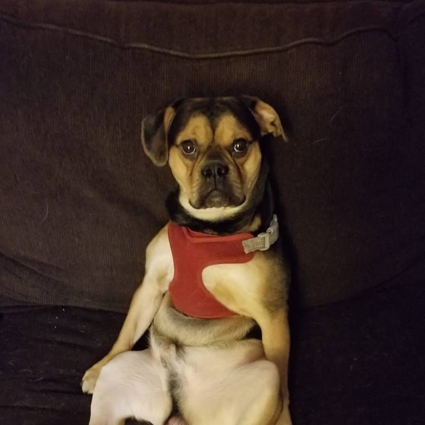
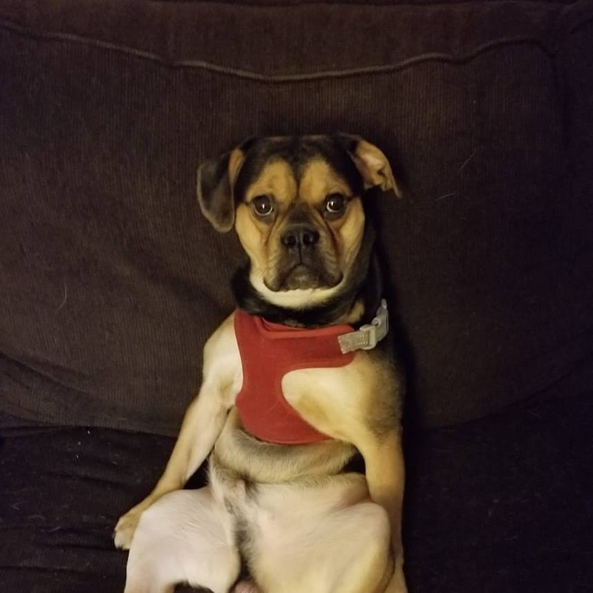

I'm Angie Jarka, I am a staff member in the ITM Department at Illinois Tech and I'm also working to finish my degree in Communications with a specialization in journalism of tech and business. I have a 14 year old son who is amazing (and graduating this year)! Working full time, part time student and parent, spare time isn't a concept I'm familiar with but on the rare occassion that I have spare time, I enjoy reading, volunteering with Housing Forward, an organization that helps to fight homelessness and watching movies and snuggling on the couch with my son (skin baby) and dog Rocky, my furbaby (don't judge). Below are pics of my "kids", my actual son Eli (older pic), my furbaby Rocky
 
